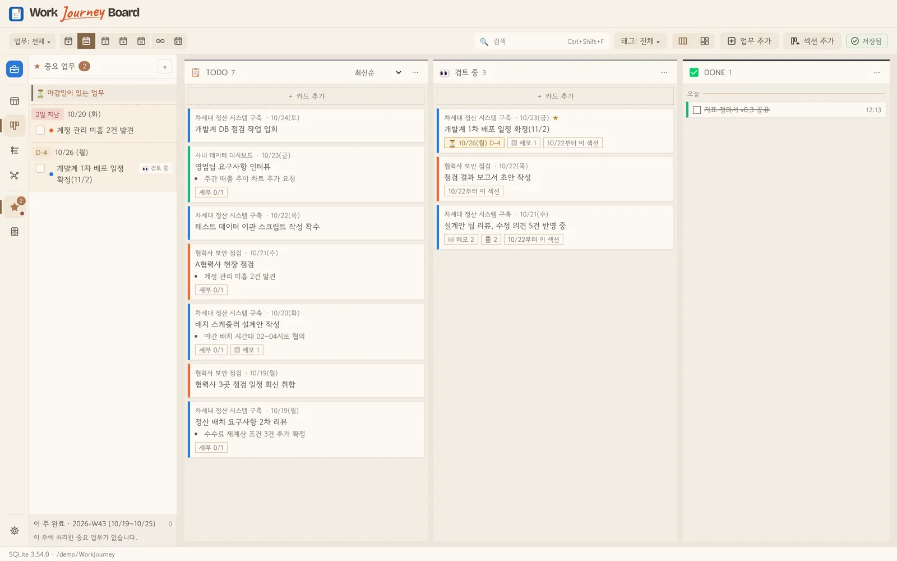
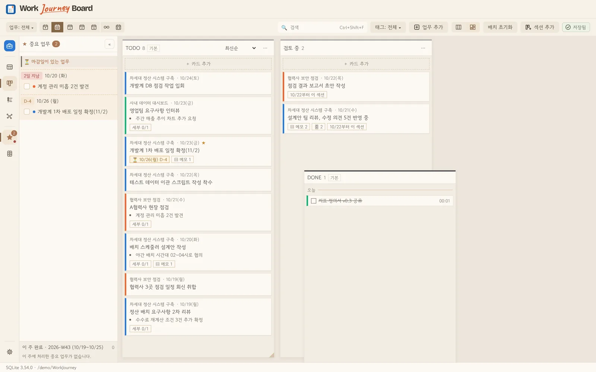
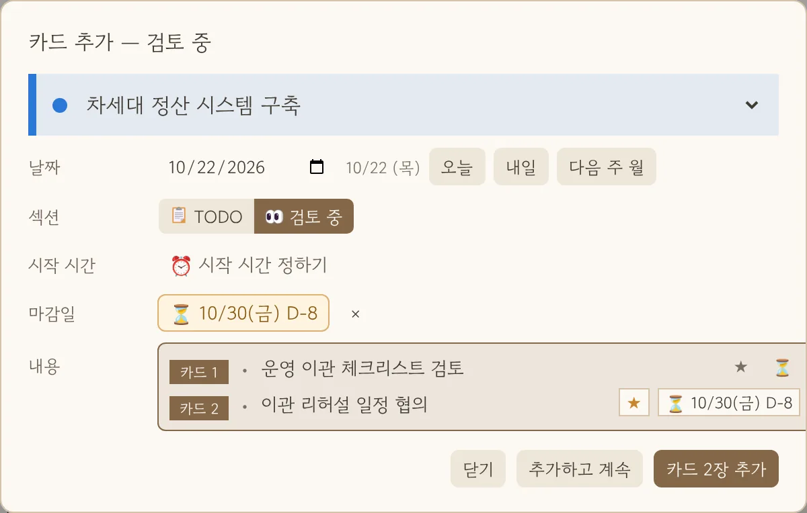
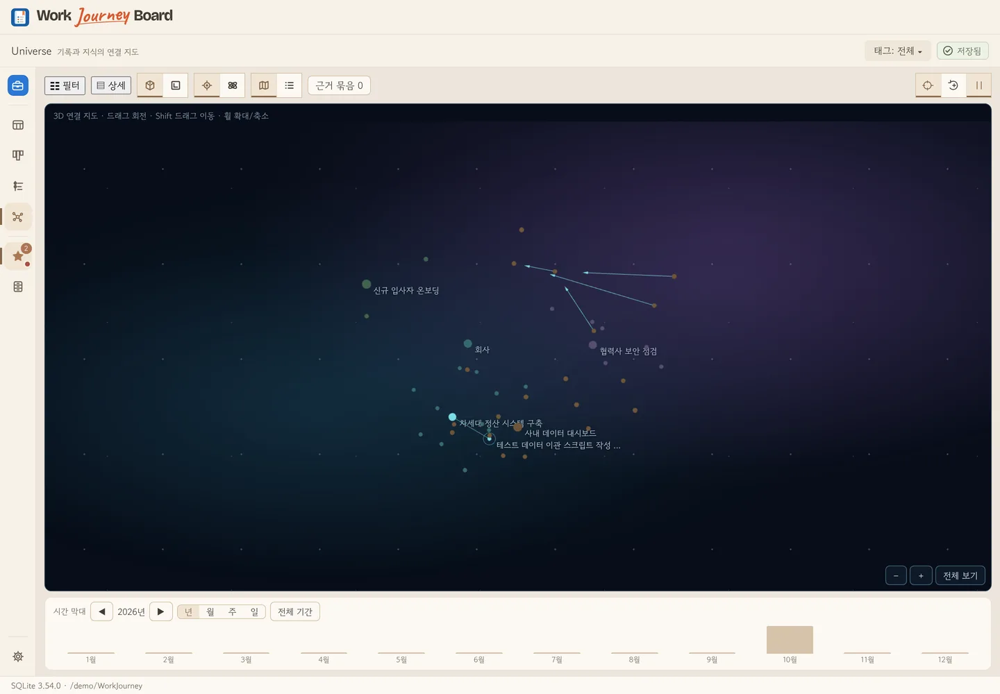
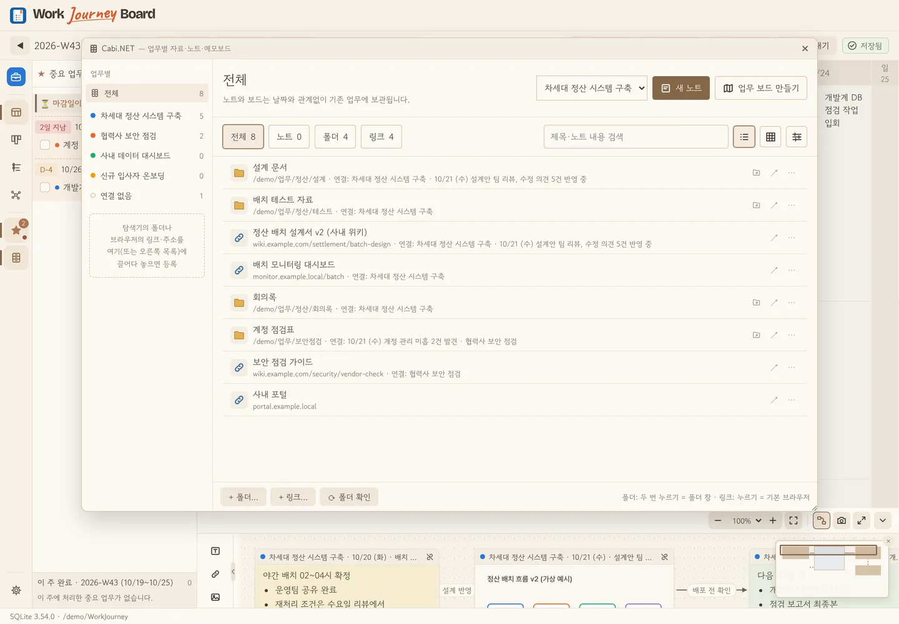
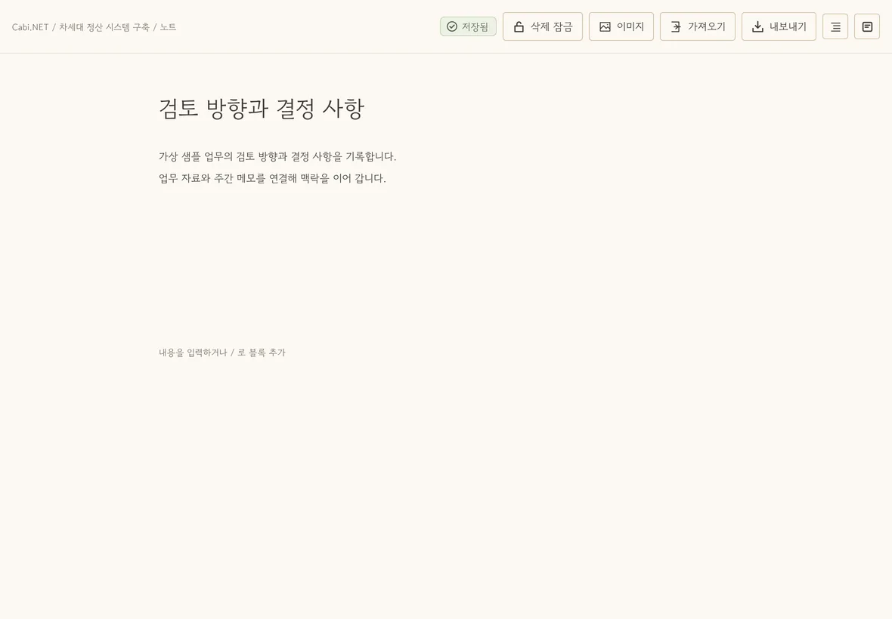
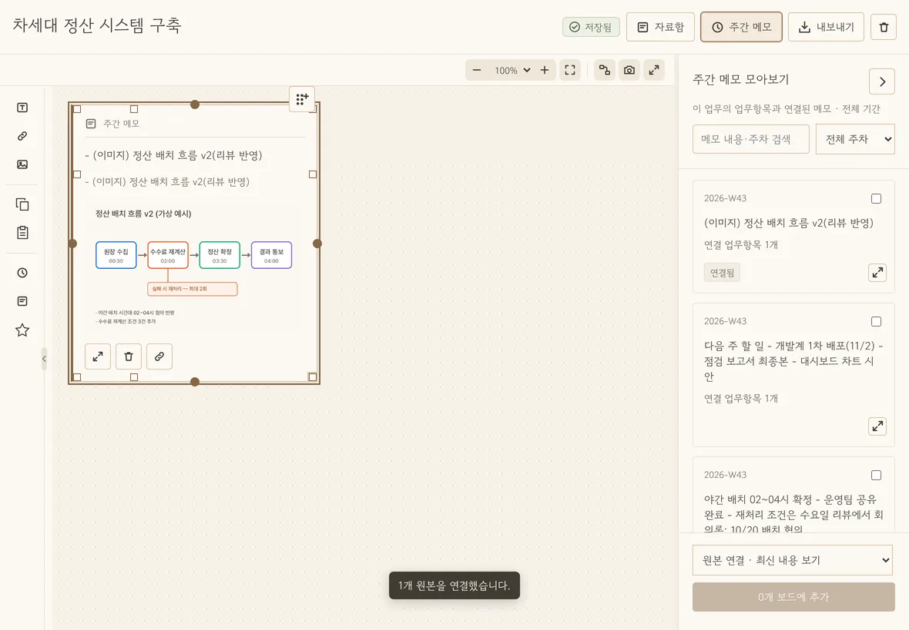

01 · 기록
매일 2분, 키보드만으로
요일과 업무가 만나는 칸에 개조식으로 적습니다. Enter로 다음 줄, Tab으로 세부 항목, ↓로 다음 업무. 주간·데일리 뷰를 오가며 마감일과 완료 상태를 관리하고, 날짜 지정 복제와 이전 기록 가져오기에서도 메모·자료 연결을 이어갑니다.
중요 표시매주 반복주간 메모 보드


바쁜 하루, 업무를 짧게 적어두세요.
한 주의 보고, 상태별 칸반, 업무별 작업 공간, 기록의 연결 지도까지.
쌓아둔 일에 다음 이야기가 생깁니다.
가상 기록을 활용한 화면 예시입니다.
A PLACE FOR YOUR WORK ✳
하루하루 흩어지기 쉬운 업무를
한 주의 보드에 차곡차곡.
계획표보다 자유롭게.
일지보다 한눈에.
01 WRITE IT DOWN
업무별로 나누어진 주간 보드에 생각나는 대로 한 줄씩. 중요한 항목을 표시하고, 관련 메모도 곁에 남길 수 있습니다.
현행 기준 검토 및 예외 조건 정리
점검 결과 확인, 조치 사항 정리
설계안 리뷰 의견 반영
02 / KANBAN BOARD NEW · 1.35
주간 보드에 적은 업무 항목이 그대로 카드가 됩니다.
끌어서 옮기면 상태가 바뀌고, DONE에 놓으면 끝.
기록과 진행 상태가 하나의 일지에 이어집니다.
위 모션은 동작 설명용 그래픽입니다. 아래는 실제 앱 화면(가상 기록)입니다.
따로 옮겨 적지 않습니다. 주간 보드의 항목이 카드가 되고, 완료는 주간 보드·중요 업무 목록에도 바로 반영돼요. 언제 어느 칸으로 옮겼는지 상태 이력도 남습니다.
TODO와 DONE 사이에 "검토 중"·"보류" 같은 섹션을 최대 8개. 섹션 머리를 끌어 순서를 바꿉니다.
화면을 고르게 나누는 균등 분할, 섹션을 판 위에 상자처럼 놓고 크기를 바꾸는 자유 배치.
업무 전체·하나·여러 개, 오늘부터 최근 12주까지 기간 아이콘, 태그와 검색으로 골라 봅니다.
새 카드는 업무·시작 시간·마감일과 함께 바로 추가. 쌓인 카드는 일괄 완료로 끝내고, 필요하면 묶음째 되돌립니다.



03 SEE THE WHOLE PICTURE
매일 남긴 기록을 업무별로 모아 주간 요약을 만듭니다. 필요한 문장을 다듬어 복사하거나 엑셀 보고서로 내보낼 수 있어요.
월 현행 기준 및 예외 조건 검토
수 설계안 리뷰 의견 반영
화 점검 결과와 조치 사항 정리
수 결과 보고서 초안 작성
04 FOLLOW YOUR JOURNEY
업무별 타임라인과 활동 히트맵에서 쌓인 기록을 다시 살펴보세요. 언제 무엇을 했는지, 일의 흐름이 이어집니다.
기존 업무 흐름과 개선 범위 확인
검토 의견과 예외 조건을 함께 정리
협의 결과와 수정 내용을 기록
05 IN THE APP
매일 쓰는 기록·요약·활동·메모의 기본기부터 살펴보세요. 화면 속 기록은 모두 가상의 예시예요.
요일과 업무가 만나는 칸에 개조식으로 적습니다. Enter로 다음 줄, Tab으로 세부 항목, ↓로 다음 업무. 주간·데일리 뷰를 오가며 마감일과 완료 상태를 관리하고, 날짜 지정 복제와 이전 기록 가져오기에서도 메모·자료 연결을 이어갑니다.
한 주의 기록이 업무별·요일별로 자동 정리됩니다. 그대로 복사하거나 고쳐 쓰고, 사내 AI 도구에 붙여 넣을 지시문도 함께. 여러 주를 엑셀 2시트로 한 번에 내보냅니다.

업무 하나를 고르면 시작부터 지금까지의 경과가 주 단위로 이어집니다. 경과 지도와 활동 히트맵으로 쉬었던 기간과 몰렸던 주가 보여요.

기록 한 줄로는 다 담기지 않는 이야기가 있습니다. 이번 주 메모 보드에 업무 항목을 연결해 메모를 쓰고, 캡처 이미지와 링크를 붙이고, 메모끼리 관계를 이어 두세요. 그 주에 일이 어떻게 이어졌는지 자유롭게 펼쳐 두고, 몇 달 뒤에도 그대로 다시 꺼내 볼 수 있습니다.
 1223
1223보드의 기록을 메모 위로 끌어다 놓으면 업무명·날짜 띠가 붙은 메모가 됩니다. 기록 칸에는 연결 표시가 남아요.
화면 캡처나 흐름도는 붙여 넣기로, 문서 주소는 링크 카드로. 모두 일지 파일 안에 함께 저장됩니다.
메모를 선으로 잇고 “설계 반영”, “후속” 같은 이름을 붙여, 일이 이어진 흐름을 그대로 그려 둡니다.
몇 달 뒤 인사이트의 업무 타임라인에서 그 항목을 펼치면 당시의 메모·이미지·링크가 함께 나옵니다. [보드에서 열기]로 그 주의 메모 보드로 바로 돌아갈 수 있어요.

06 / UNIVERSE 정식 제공 · 1.15에서 3D 개편
흩어져 있던 업무, 메모, 자료.
은하를 돌아보고 하나의 기록에 다가가면
그 일이 이어진 맥락이 보입니다.
3D 은하와 초점, 정적 2D와 목록.
나에게 맞는 방식으로 탐색하세요.
주를 넘어 연결하고 지식 카드로 정리.
단순한 선보다 오래 남는 근거를 만듭니다.
필터와 상세 패널은 필요할 때만.
연결의 출처를 확인하고 원문으로 돌아갑니다.
연결 구조와 모션을 설명하는 가상 그래픽입니다. 실제 앱에서는 마우스 휠 확대·축소에 따라 은하와 초점이 이어집니다.

07 / CABI.NET
폴더와 링크를 모으던 Cabinet에서
노트와 전용 보드를 갖춘 Cabi.NET으로.
매일의 기록 옆에 업무의 작업실을 엽니다.
이번 검토에서 확인한 내용
✓ 주간 기록과 근거 확인□ 다음 검토에 이어 기록위 모션은 동작 설명용 그래픽입니다.



08 YOUR SPACE
업무 기록과 메모는 직접 선택한 폴더의 로컬 파일에 저장됩니다. 백업 당시 앱·DB 구조 버전을 확인하고, 보관 일수·용량 규칙으로 백업 파일을 정리하세요. 회사와 개인 기록은 워크스페이스로 나누어 보관합니다.
앱의 새 버전 확인과 다운로드에는 GitHub 연결을 사용하며, 업무 기록과 메모는 전송하지 않습니다.
LOCAL FIRST · WINDOWS / macOSFOR EVERYDAY WORK
매일 쓰는 기록이 내 일의 이야기가 되는 곳.
내려받기 (Windows · macOS) GitHub 릴리스 페이지에서 Windows 설치 파일(기본판·오프라인 설치판)과 macOS 디스크 이미지(DMG)를 받을 수 있습니다.빠른 이용 가이드 (HTML · PDF)